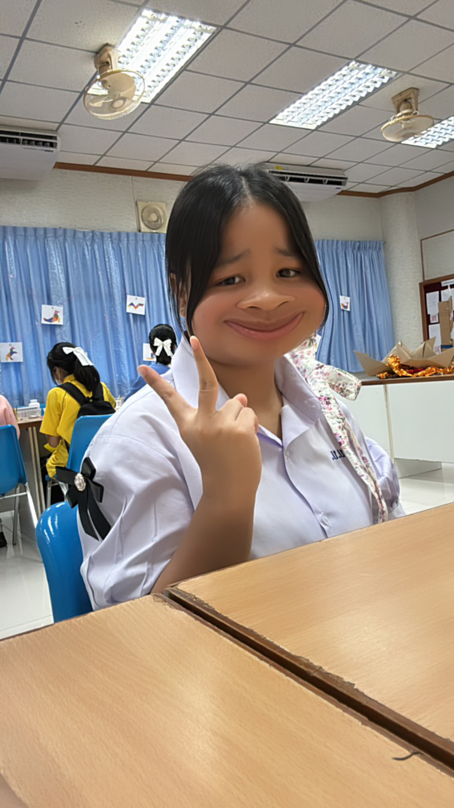

✦
✧


ฝึกประสบการณ์อาชีพ ณ เทศบาลเมืองลำปลายมาศ
ผลงาน
เกียรติบัตร
การฝึกประสบการณ์การทำงาน ณ กองสวัสดิการสังคม เทศบาลเมืองลำปลายมาศ
ตลอดระยะเวลา 10 วัน ถือเป็นโอกาสอันมีค่าในการเรียนรู้ระบบการทำงานภาครัฐอย่างแท้จริง
ในช่วงแรกของการฝึกงาน ได้มีส่วนร่วมในงานจัดการข้อมูลด้วยการรวบรวมและจัดเก็บสถิติของ
อาสาสมัครสาธารณสุขประจำหมู่บ้าน (อสม.) อย่างเป็นระบบ นอกจากนี้ยังได้ร่วมดำเนินกิจกรรมใน
"โรงเรียนผู้สูงอายุ" และโครงการศูนย์ดูแลผู้สูงอายุระหว่างวัน (Day Care)
ซึ่งเปิดโอกาสให้ได้เข้าไปมีส่วนร่วมในการสร้างรอยยิ้ม ความสุข และส่งเสริมสุขภาวะที่ดีให้แก่ผู้สูงวัยในชุมชน
นอกเหนือจากงานในสำนักงานแล้ว ยังได้ลงพื้นที่ปฏิบัติงานภาคสนามผ่านกิจกรรมปลูกป่าเพื่ออนุรักษ์ธรรมชาติ
รวมถึงร่วมสำรวจปักแนวเขตและจัดเก็บข้อมูลพันธุกรรมพืชในโครงการ อพ.สธ.
ร่วมกับชุมชนและผู้เชี่ยวชาญ ประสบการณ์ทั้งหมดนี้ไม่เพียงแต่ช่วยพัฒนาทักษะการทำงาน
ความรับผิดชอบ และการทำงานร่วมกับผู้อื่น แต่ยังสร้างจิตสาธารณะในการมุ่งมั่นพัฒนาท้องถิ่น
จนได้รับมอบเกียรติบัตรรับรองจากท่านนายกเทศมนตรีเมืองลำปลายมาศ ด้วยความภาคภูมิใจ
✦
✧


นักเรียนจิตอาสาในงานมหกรรมวิชาการ
ผลงาน
เกียรติบัตร
ในการทำหน้าที่จิตอาสาประจำบูธแผนการเรียนวิทยาศาสตร์-คณิตศาสตร์
(Gifted Program) ฐานเกม 24 ดิฉันมีความตั้งใจที่จะส่งต่อความรู้และสร้างบรรยากาศที่สนุกสนาน
ให้แก่ผู้เข้าร่วมงาน โดยรับผิดชอบการต้อนรับ อธิบายกติกา และสาธิตวิธีการเล่นอย่างใกล้ชิด
การทำงานเพื่อส่วนรวมในครั้งนี้ ไม่เพียงแต่ทำให้ดิฉันภูมิใจที่ได้เป็นผู้ให้และอำนวยความสะดวกแก่ผู้อื่น
แต่ยังสอนให้ดิฉันได้เรียนรู้ทักษะที่สำคัญ ทั้งความกล้าแสดงออกในการพูดคุยกับผู้คนหลากหลาย
และการฝึกทักษะการสื่อสารเพื่อถ่ายทอดข้อมูลที่ซับซ้อนให้เข้าใจง่ายและเป็นกันเอง
✦
✧


อบรมค่ายพัฒนาคุณธรรม จริยธรรมนักเรียน
ผลงาน
เกียรติบัตร
การเข้าร่วมกิจกรรมในครั้งนี้ทำให้ดิฉันได้เรียนรู้และตระหนักถึงความสำคัญของคุณธรรม
จริยธรรม ระเบียบวินัย ความรับผิดชอบ และการอยู่ร่วมกับผู้อื่นในสังคม
ผ่านกิจกรรมที่ช่วยส่งเสริมการพัฒนาทั้งด้านความคิด จิตใจ และพฤติกรรม
นอกจากนี้ยังได้ฝึกการมีสมาธิ การควบคุมตนเอง การเคารพผู้อื่น
และการนำหลักคุณธรรมมาปรับใช้ในชีวิตประจำวัน ประสบการณ์จากกิจกรรมครั้งนี้ช่วยให้ดิฉัน
ได้พัฒนาตนเองให้เป็นผู้ที่มีความรับผิดชอบ มีจิตสาธารณะ รู้จักเสียสละและช่วยเหลือผู้อื่น
รวมถึงสามารถนำข้อคิดและประสบการณ์ที่ได้รับไปประยุกต์ใช้ทั้งในการเรียน
การทำงานร่วมกับผู้อื่น และการดำเนินชีวิตอย่างเหมาะสม
✦
✧
🌊 เข้าร่วมงาน Open House มหาวิทยาลัยบูรพา
ผลงาน

ดิฉันมีความสนใจที่จะศึกษาต่อที่มหาวิทยาลัยบูรพา
จึงได้เข้าร่วมงาน Open House เพื่อรับฟังข้อมูลและคำแนะนำเกี่ยวกับคณะศึกษาศาสตร์
สาขาวิชาคณิตศาสตร์ รวมถึงได้เรียนรู้เกี่ยวกับแนวทางการศึกษาและการเตรียมตัวสำหรับการเข้าศึกษาต่อ
ประสบการณ์ครั้งนี้ทำให้ดิฉันได้รู้จักสาขาที่สนใจมากขึ้น
และยิ่งทำให้มีความตั้งใจที่จะพัฒนาตนเองเพื่อก้าวไปสู่เป้าหมายในการเป็นครูคณิตศาสตร์ในอนาคตค่ะ